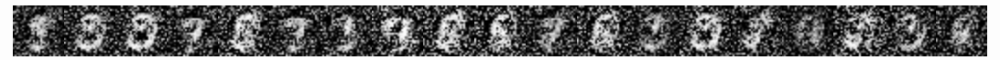

Simple MNIST GAN using TensorflowJS
An implementation of MNIST Generative Adversarial Network using lower level TensorflowJS functionalities. Both Generator and Discriminator uses densely connected layers - to keep architecture simple as possible, and to make training feasible on most browser/hardware combinations. With default hyper parameters the networks start to converge and produce recognizable results after about 40 epochs.
| Samples before epoch 20: |  |
| Samples around epoch 30: |  |
Click Train to train for an additional 5 epochs. Click Load weights to restore pre-trained weights and biases for the Generator. Click Sample image to generate a sample output.
Debugging and stats are logged to the console